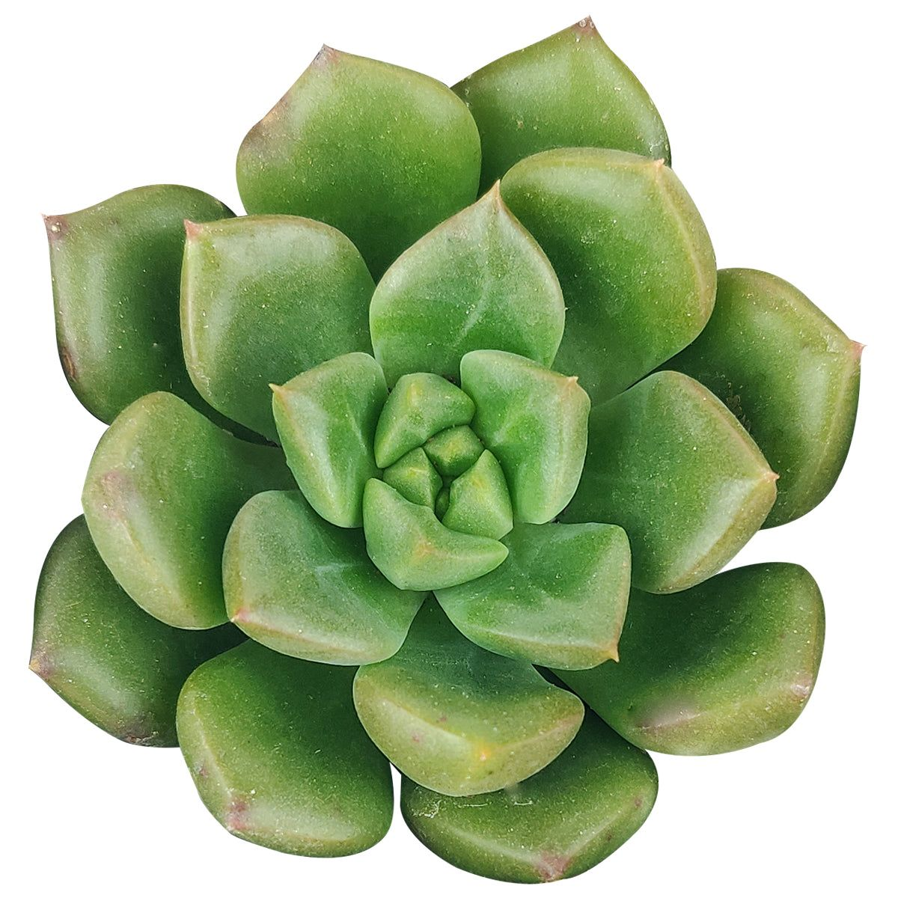

1. Seasons for Growing Xerophytes

Xerophytes are adapted to dry environments and can be grown year-round in arid and semi-arid regions. However, the best season for planting may vary:
- Hot Desert Species: Typically planted in early spring or fall to avoid extreme summer heat.
- Cold Desert Species: Planted in late spring to allow sufficient time for growth before winter.